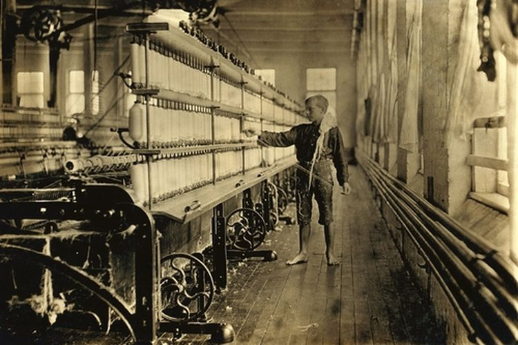

Revolusi Industri 2.0 membawa dampak besar pada kehidupan masyarakat, terutama dalam bidang industri dan transportasi.
Berikut adalah dampak terjadinya Revolusi Industri 2.0:
1. Dampak Industri
- Perkembangan Ekonomi dan Barang menjadi lebih murah dan lebih mudah diakses oleh masyarakat luas.
- Urbanisasi Cepat dan Kota-kota besar berkembang pesat karena banyak orang bekerja di pabrik.
- Perubahan Sosial dan Standar hidup meningkat, dengan akses lebih baik ke listrik, transportasi, dan komunikasi.
- Munculnya Perusahaan Besar dan Perusahaan seperti General Electric, Ford, dan Siemens berkembang pesat.
- Eksploitasi Tenaga Kerja dan Buruh masih menghadapi jam kerja panjang dan kondisi kerja buruk sebelum adanya regulasi ketenagakerjaan.
2. Dampak transportasi
- Perkembangan Kereta Api Listrik
- Munculnya Mobil dan Industri Otomotif
- Revolusi dalam Transportasi Laut
- Awal Perkembangan Penerbangan
- Dampak Sosial dan Ekonomi
Dampak Masyarakat
- Penggunaan listrik memungkinkan masyarakat memiliki lampu, peralatan rumah tangga, dan transportasi yang lebih cepat.
- Munculnya kelas pekerja (buruh pabrik) dan kelas menengah yang bekerja di sektor administrasi dan perdagangan.
- Peningkatan eksploitasi tenaga kerja, terutama untuk perempuan dan anak-anak, yang bekerja dengan upah rendah dan jam kerja panjang.
- Mobil dan kereta api listrik mempercepat perjalanan dan distribusi barang, menghubungkan kota-kota besar.
- Pendidikan semakin berkembang, karena meningkatnya kebutuhan akan tenaga kerja terampil.